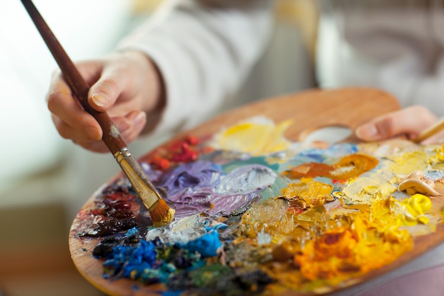

I will share with you a bit about my flow.
I see myself as more of an artistic person and I've always been drawn to visual arts because that is how I can best express my creativity. I specifically enjoy drawing and painting and love using a variety of different mediums such as...

I would have to say watercolor is my favorite medium because of the pretty cool effects it creates when being blended together. Sometimes, all that I have at hand are pencils and that does the job when I am in the mood to sketch something. I can immerse myself in the shading process as I like to take my time and get the details correct to highlight every aspect my artwork and make the whole piece pop! Even though I'm not the best at art, I'm very proud of the significant improvement I've made over the years with various different techniques and details captured.